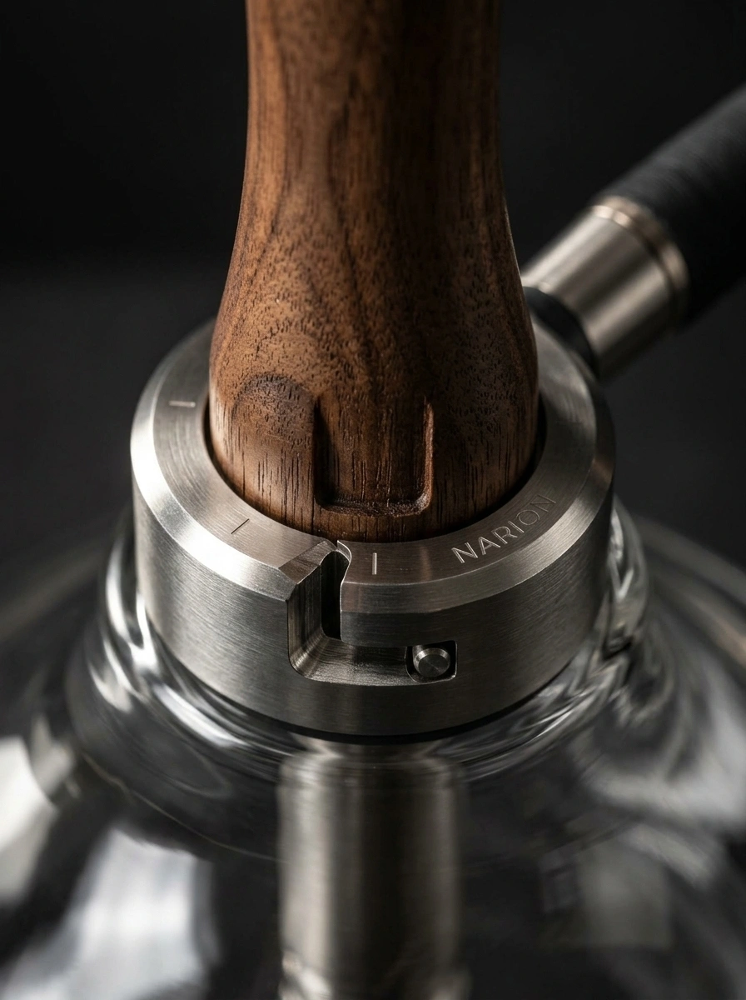
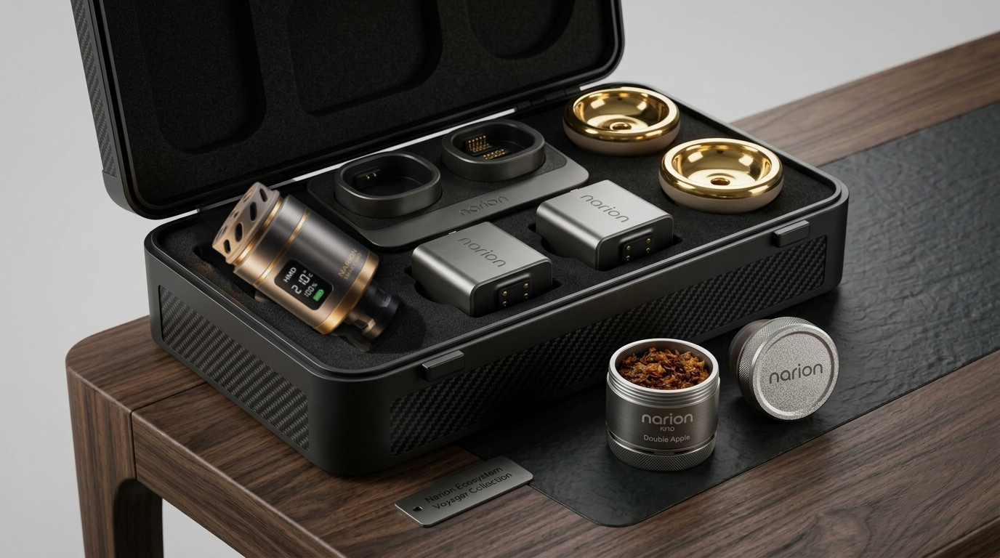

Толстостенная хрустальная колба ручной работы • Фирменный байонет 45° • 17 авторских моделей и первая в мире беспроводная керамическая система Smart HMD без угля.
17 МОДЕЛЕЙ
•
100% ХРУСТАЛЬ РУЧНОЙ РАБОТЫ
•
45° БАЙОНЕТ
•
БЕЗ УГЛЯ ЭЛЕКТРОНАГРЕВ
NARION HOOKAH ARCHITECTUREWWW.NARIONHOOKAH.COM
NARIONФилософия и инженерия
02
МАНИФЕСТ БРЕНДА
Пересечение традиций и аэрокосмической инженерии
NARION переосмысливает многовековую кальянную культуру через современное материаловедение, микронные допуски ЧПУ и стандарты гигиены.
ПРИНЦИП 01
Толстостенная хрустальная колба ручной работы
Оптический толстостенный хрусталь ручной выдувки: низкий центр тяжести, идеальная прозрачность и отсутствие впитывания запахов.
ПРИНЦИП 02
Байонетный замок 45°
Вместо рвущихся уплотнителей и заедающей резьбы — трёхлепестковый ЧПУ-замок из нержавеющей стали с герметичной фиксацией за поворот на 45°.
ПРИНЦИП 03
Моноблочная ЧПУ-шахта
Выточена из цельной заготовки стали AISI 304 без сварных швов и скрытых резьб — никакой коррозии и застоя сиропа.
ПРИНЦИП 04
Разборка без инструментов за 40 секунд
Все узлы разбираются вручную для быстрой мойки — полное отсутствие смешивания вкусов («гостинга») между сессиями.

Прецизионная сталь AISI 304 и массив дерева
Каждая деталь вытачивается на 5-осевых станках с ЧПУ в Стамбуле, полируется вручную и проходит пневмотест герметичности.
Металлическая гарантийная карта с серийным номером, руководство, микрофибра и запасной комплект FKM-колец.
NARIONПутешествия и питание
16
VIP-ПУТЕШЕСТВИЯ И АКСЕССУАРЫ
Карбоновый кейс VIP Voyager и GaN-станция
Бронированный карбоновый кофр для частной авиации, суперъяхт и путешествий без привязки к углю.

Ударопрочный карбоновый кофр
Ударопрочный герметичный корпус с замком TSA и клапаном давления: вмещает 1 кальян + 2 Smart HMD + 4 батареи.
Настольная быстрая док-станция 100W GaN
Алюминиевая база 100W GaN заряжает одновременно до четырёх аккумуляторов всего за 25 минут.
Экосистема NFC-капсул 13 г
Герметичные алюминиевые капсулы на 13 г табака: экономия 41% сырья, чистота подачи в 5 секунд и автонастройка температуры по NFC.
ГАБАРИТЫ
48 x 36 x 18 cm
Ручная кладь (cabin size)
ВЕС
4.2 кг (полный комплект)
Ультралёгкий карбон
СЕРТИФИКАЦИЯ
IP67 & TSA Approved
Допуск авиабезопасности
NARIONМатрица технических характеристик
17
ТЕХНИЧЕСКАЯ МАТРИЦА
Сводная таблица размеров и материалов всех 17 моделей
Все модели оснащены внутренней шахтой из пищевой стали AISI 304, толстостенной хрустальной колбой ручной работы и байонетом 45°:
МОДЕЛЬ
СЕРИЯ
ВЫСОТА
ВЕС
МАТЕРИАЛ КОРПУСА
ЗАМОК
ОСОБЕННОСТЬ
KOZA
Флагман
420 mm
3 800 г
Массив американского ореха
45° Bayonet
Панорамное окно воды
LADİN
Флагман
580 mm
4 100 г
Массив дуба «ёлочкой»
45° Bayonet
Скандинавская вертикаль
MANOLYA
Флагман
620 mm
3 900 г
Алюминий и латунь шампань
45° Bayonet
Открытый каркас 360°
ZEYTİN
Модерн
440 mm
3 400 г
Крылья из массива ореха
45° Bayonet
Органические крылья
ARDIÇ
Модерн
500 mm
3 600 г
Титан PVD и массив дерева
45° Bayonet
Линейный вертикальный ритм
KEMER
Модерн
560 mm
3 750 г
ЧПУ-сталь AISI 304
45° Bayonet
Монументальная арка
YÖRÜNGE
Модерн
460 mm
3 500 г
Диски авиа-алюминия
45° Bayonet
Защита от опрокидывания
ÇAKIL
Модерн
380 mm
3 200 г
Сатинированная сталь
45° Bayonet
Обводы морской гальки
SERVİ
Престиж
680 mm
4 500 г
Высокая шлифованная сталь
45° Bayonet
Максимальная высота 680 мм
YALIN
Классика
520 mm
3 700 г
Нержавеющая сталь AISI 304
45° Bayonet
Чистый минимализм
AURA
Престиж
600 mm
4 200 г
Призматическая сталь и дерево
45° Bayonet
Скрытый световой ореол
MONOLİT
Престиж
550 mm
4 600 г
Цельнофрезерованный алюминий
45° Bayonet
Моноблочная скульптура
İNCİ
Престиж
480 mm
3 600 г
Перламутровая PVD-керамика
45° Bayonet
Акценты латунь-шампань
PRİZMA
Техно
510 mm
3 500 г
Гранёная стальная конструкция
45° Bayonet
Вертикальная продувка
OCAK
Техно
470 mm
3 900 г
Массивная индустриальная сталь
45° Bayonet
Закрытый контур очага
FENER
Техно
530 mm
3 800 г
Морской ветрозащитный каркас
45° Bayonet
Для яхт и открытых террас
NOMAD
Техно
350 mm
2 100 г
Компактная сталь и хрусталь
45° Bayonet
Фирменный тревел-кейс
NARION GLOBAL HQİSTANBUL, TR
NARION
SMART HOOKAH SYSTEMS • İSTANBUL
Кальяны NARION производятся на 5-осевых ЧПУ-станках в Стамбуле с фирменным байонетом 45° и толстостенной хрустальной колбой ручной работы. (Фаза 2 R&D: небьющаяся колба Eastman Tritan™).